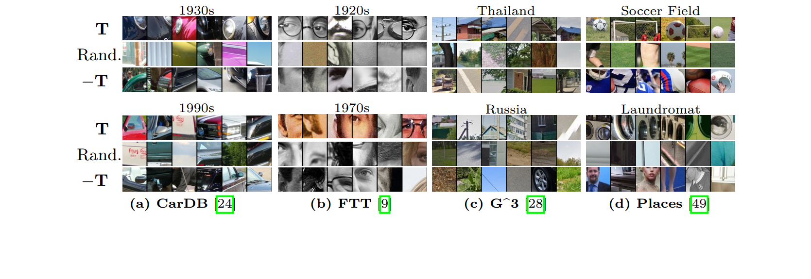
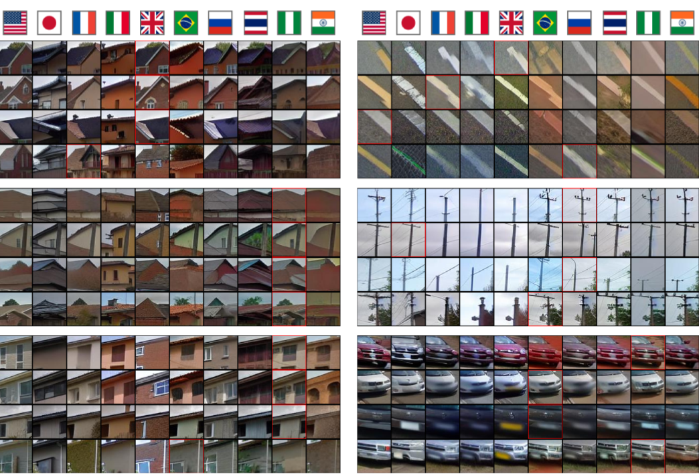
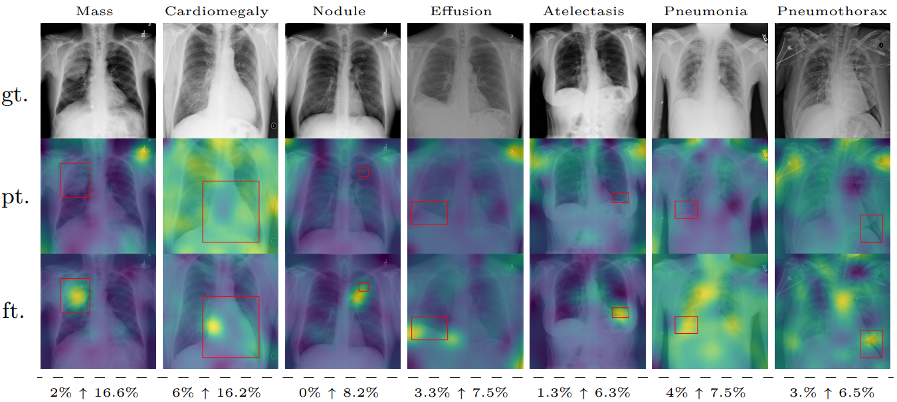

This paper demonstrates how to use generative models trained for image synthesis as tools for visual data mining. Our insight is that since contemporary generative models learn an accurate representation of their training data, we can use them to summarize the data by mining for visual patterns. Concretely, we show that after finetuning conditional diffusion models to synthesize images from a specific dataset, we can use these models to define a typicality measure on that dataset. This measure assesses how typical visual elements are for different data labels, such as geographic location, time stamps, semantic labels, or even the presence of a disease. This analysis-by-synthesis approach to data mining has two key advantages. First, it scales much better than traditional correspondence-based approaches since it does not require explicitly comparing all pairs of visual elements. Second, while most previous works on visual data mining focus on a single dataset, our approach works on diverse datasets in terms of content and scale, including a historical car dataset, a historical face dataset, a large worldwide street-view dataset, and an even larger scene dataset. Furthermore, our approach allows for translating visual elements across class labels and analyzing consistent changes.
Our approach takes as input a dataset with image-level tags, such as time, geography, or scene labels and produces a visual summary of the elements typical to the different tags, such as the common elements that enable us to determine the location of a streetview panorama. To arrive at this summary, we first finetune a conditional diffusion model on the target dataset. We then use the finetuned model to define a pixel-wise typicality measure by assessing the degree to which the label conditioning impacts the model's reconstruction of an image. We mine visual elements by aggregating typicality on patches, selecting the most typical ones, and clustering them using features extracted from the finetuned model.

Typical elements are informative of the conditioning label. We visualize the top-6 patches ranked according to typicality ($ \mathbf{T} $) with respect to the conditioning class label, negative typicality ($ -\mathbf{T} $), and randomly (Rand.). The two rows correspond to different classes from each of the four datasets.
Effect of finetuning. For the same USA image (top), finetuning changes the spatial allocation of typicality before (middle) and after (bottom) finetuning (a). This results in different typical clusters (USA), which, after finetuning (bottom), select for more typical elements like mailboxes (b). Translation from France (top) to Thailand without finetuning (middle) suffers from data biases in the base model turning the road into a river and erasing utility poles. After finetuning on the G^3 dataset (bottom), the translated image is more consistent with the original (c).
1. Finetuning üìâ
Given a label $ y $, we finetune a standard conditional latent diffusion model with a loss $ L_{t}\left(x, \epsilon, c(y)\right) $ and c.f.g., where $ c(y) $ is a prompt of the form $ c(y) = \text{"An image of {y}"} $.
2. Ranking üõï
Inspired from Li et al. 2021, we define a patch based ranking measure of typicality $\mathbf{T}$, given a conditioning label $ c $: $ \mathbf{T} (x|c) = \mathbb{E}_{\epsilon,t}[L_t(x, \epsilon, \varnothing) - L_t(x, \epsilon, c)]. $
3. Clustering üß´
After extracting the most typical patches from each image we cluster them using DIFT-161 features, and rank clusters according to their median typicality.
Applications
1. Summaries of variations. üóÉÔ∏è
Having a diffusion model finetuned on a dataset of interest enables further applications that were not possible with previous visual mining approaches. One new application is the summary of variation of typical visual elements across different classes. As a case study, we use the G^3 dataset to discover and summarize how co-typical elements, such as windows, roofs, or license plates, vary across locations. Using Plug and Play and our finetuned diffusion we create a "parallel dataset", by translating all the images in our mining dataset to all locations. Defining a co-typicality measure, allows us to mine the most typical transformations of visual elements, which we can then cluster by joint-clustering their concatenated features.

Clustering typical translations of elements across countries. Ranking translated visual elements according to $\mathbf{T}$ and clustering the translated sequences results in groups of elements with similar variations. We show elements from 6 selected clusters out of 32. The source image for each sequence is highlighted in red.
We test the localization property of typicality by finetuning Stable Diffusion on the ChestX-ray8 dataset, containing X-rays of patients who may suffer from a combination of various thorax diseases. Finetuning clearly improves the localization, which we quantify by computing the area under the precision recall-curve (AUC-PR) associated with ground truth ROIs. We see consistent improvement of this measure when finetuning the network (from 3.2% to 9.6%), ranging from +3.5% for Pneumonothorax (from 3% to 6%) to +14.6% for Mass (from 2% to 16.6%), which are respectively the least and most localized diseases. Similar to our other experiments, finetuning uses only image labels without localization supervision.

Localizing abnormal areas in medical images. We visualize typicality when finetuning our model on the CXR8 dataset of thorax diseases. After fine-tuning (ft.), we can see a clear focus of the typicality score on expert annotated areas (red boxes) for each disease, while initial predictions from the pretrained Stable Diffusion V1.5 model (pt.) are mostly noise. Images are ordered by AUC-PR after finetuning. With $\uparrow$ we delimitate performance before and after finetuning, in the last row.
Cite us
@article{diff-mining,
title = {Diffusion Models as Data Mining Tools},
author = {Siglidis, Ioannis and Holynski, Aleksander and Efros, A. Alexei and Aubry, Mathieu and Ginosar, Shiry},
journal = {ECCV},
year = {2024},
}
Acknowledgments
This work was partially supported by the European Research Council (ERC project DISCOVER, number 101076028) and leveraged the HPC resources of IDRIS under the allocation AD011012905R1, AD0110129052 made by GENCI. It was also partially supported by ONR MURI. We thank Grace Luo for data, code, and discussion; Loic Landreu and David Picard for insights on geographical representations and diffusion; Carl Doersch, for project advice and implementation insights; Sophia Koepke for feedback on our manuscript.